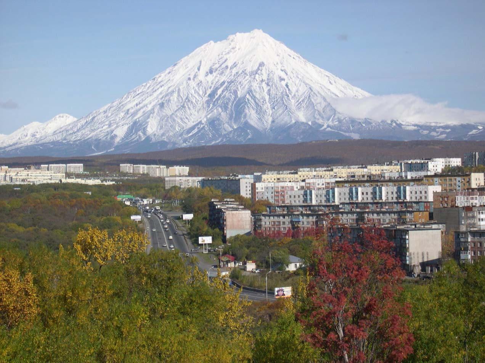

Дальний Восток известен своим суровым климатом, особенно в северных районах, где преобладает субарктический и арктический климат. Однако в южных районах, таких как Приморский край, климат более умеренный, с теплым летом и относительно мягкой зимой. Регион также известен своей высокой сейсмической активностью, особенно на Камчатке и Курильских островах, где расположено множество действующих вулканов. Природа Дальнего Востока чрезвычайно разнообразна: от арктических пустынь на севере до субтропических лесов на юге, от горных хребтов до равнин, от вечной мерзлоты до плодородных почв. Дальний Восток богат природными ресурсами, включая нефть, газ, уголь, золото, алмазы, рыбу и другие полезные ископаемые, что делает его важным экономическим регионом России.